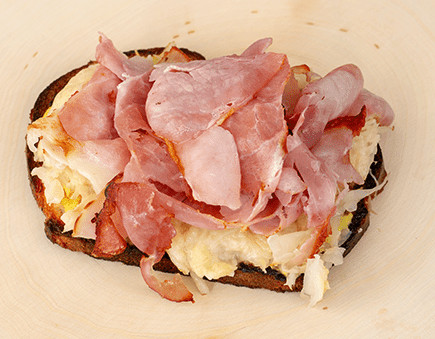

Ham Sandwich

Have a champion size hunger? Try out this ham and cheese sandwich from The Witcher 3
Ingredients
Sauce
- 1/2 tbsp horseradish
- 1/2 tsp apple cider vinegar
- 1 tbsp mustard
- 1/2 tbsp mayo
Sandwich
- 1 1/2 tbsp butter, room temperature
- 2 tsp garlic paste
- 2 slices of rye bread
- 2 slices of Swiss Cheese
- 4 slices of ham
- 1/2 cup sauerkraut
Directions
- Mix all the sauce ingredients together in bowl. Place in refrigerator untill ready to use.
- Mix room temperature butter and garlic paste together in bowl.
- Spread the butter/garlic mixture over each of the rye slices. Place the bread (buttered side up) on a baking sheet.
- On same sheet, and the ham and sauerkraut.
- Turn on the broiler and place the sheet uner until the bread begins to crisp. Remove and flip everything over.
- Add the slice of swiss cheese on top of each sauerkraut portion. Return to broiler until the other side of bread crisps.
- Now assemble the sandwich. Take a piece of bread, buttered side up. Smear a generous portion of the sauce on the bread. Top with the sauerkraut and cheese. Finally, andd ham and enjoy!
Home Page